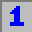
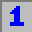

How to Play
Minesweeper
Introduction
Minesweeper is the classic game of logic. Preinstalled on most Windows computers, many users stumble upon and become avid players of the game. While many still play Minesweeper as simply a game of chance, with simple logic and a strategy, one can quickly become of master of the game
Objective
The minesweeper board consists of a grid of cells-some of these cells contain hidden mines. The objective of the game thus is to reveal all the “safe” cells on the board without revealing a mine.
Types of Cells
The true nature of each cell is initially hidden, as the cell is unrevealed at the beginning of a game.
When a user clicks on an unrevealed cell, the cell reveals whether or not it is a mine through unveiling one of the following:
 

If the cell reveals a mine, all the mines are revealed and explode. The game is then over.
If the cell reveals a numbered cell, it is a “safe” cell; however, it is touching at least one mine. The number of mines the cell is touching is indicated by the number on the cell.
If the cell is blank, it is a safe cell that does NOT touch a mine. In most cases, there are many blank cells that are grouped together. If this is the case for the cell revealed, the entire body of blank cells will be revealed (enclosed by numbered cells and/or the bounds of the board).
Flags
To keep track of where a mine “supposedly” exists, the user can “flag” the cell. When a cell is flagged, its contents cannot be revealed when clicked on. A cell can be later un-flagged if the user believes it is not a mine since all safe cell must be revealed. However, cells with mines can remain flagged or un-flagged to win the game. To flag a cell, right-click the cell. Right-clicking cycles between flags, question marks, and unrevealed cells, so right click until the desired label is shown.

Question Marks
If the player is not sure whether or not a cell is safe and wants to mark it, they can do so with a question mark. Once again, since all safe cells must be revealed, the question mark from a safe cell must be removed in order to reveal it. Just like flagging a cell, to label a cell with a question mark, right-click the cell. As mentioned above, right-clicking cycles between flags, question marks, and unrevealed cells, so right click until the desired label is shown.

If all the safe cells are revealed, all the mines are automatically flagged and you win the game!
Happy Minesweeping!